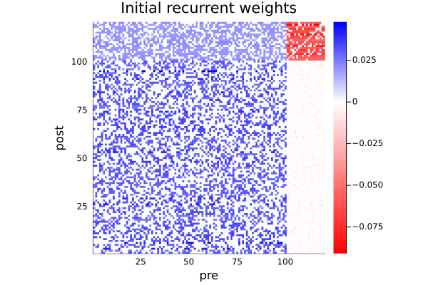
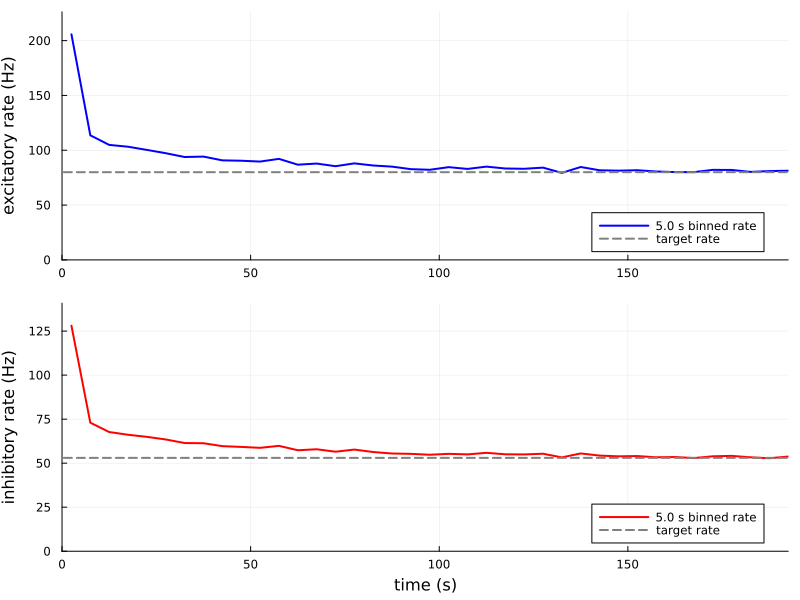
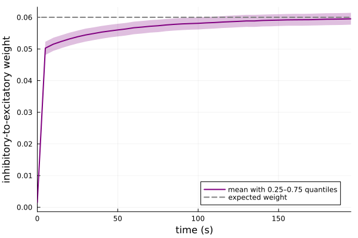
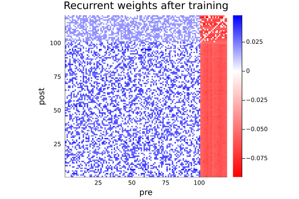
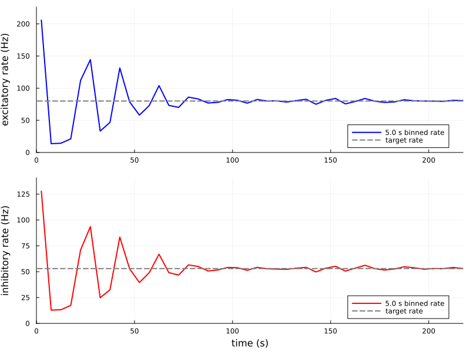
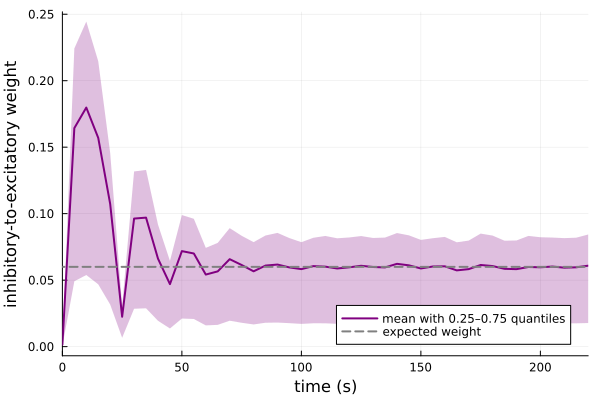
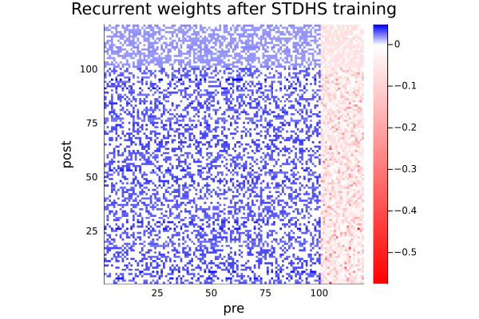

Stabilization of large E/I recurrent networks through homeostatic plasticity
In this example, I show how two flavors of homeostatic inhibitory-to-excitatory plasticity can stabilize a large E/I network, so that the exc population reaches a target firing rate determined below.
Initialization
using Random
using Statistics
using Distributions
using Plots, Colors
Random.seed!(0)
using HawkesPlasticNetworks; global const H = HawkesPlasticNetworksHawkesPlasticNetworksDefine the parameters
ne = 100 # number of excitatory neurons
ni = 20 # number of inhibitory neurons
τ_e = 20E-3 # time constant for excitatory neurons
τ_i = 10E-3 # time constant for inhibitory neurons
n_spikes = 2_000_000 # total number of spikes to simulate (for all neurons!)
w_ee = 1.295 # excitatory-to-excitatory connection weight
w_ie = 1.2 # excitatory-to-inhibitory connection weight
w_ei_example = 1.2 # inhibitory-to-excitatory connection weight (this will actually come from plasticity)
w_ii = 1.0 # inhibitory-to-inhibitory connection weight
h_e = 40.0 # external input to excitatory neurons
h_i = 10.0 # external input to inhibitory neurons
p_ee = 0.4 # sparseness for E->E
p_ei = 1.0 # sparseness for I->E
p_ie = 0.6 # sparseness for E->I
p_ii = 0.8 # sparseness for I->I
bin_width = 5.0 # bin width for rate recording
n_tot = ne + ni
idx_e = 1:ne
idx_i = ne+1:n_tot;Check the expected rates
rate_example_e,rate_example_i = H.expected_rate_EI(
w_ee,w_ie,w_ei_example,w_ii,
h_e,h_i)
re_target = rate_example_e # the target rate will be the same we calculate here
ri_target = rate_example_i
println("Expected excitatory rate: ",round(rate_example_e;digits=2))
println("Expected inhibitory rate: ",round(rate_example_i;digits=2))Expected excitatory rate: 80.0
Expected inhibitory rate: 53.0Create expanded weight matrices
wmat_ee = H.generate_sparse_matrix_fixed_input(ne,ne,w_ee,p_ee;self_connections=false)
wmat_ie = H.generate_sparse_matrix_fixed_input(ni,ne,w_ie,p_ie)
wmat_ii = H.generate_sparse_matrix_fixed_input(
ni,ni,w_ii,p_ii;self_connections=false);We still need to initialize wmat_ei, the plastic part let's use a very weak long-tailed distribution for the weights with this choice, we expect the network to be unstable at first
wmat_ei_start = H.generate_sparse_matrix_fixed_input(ne,ni,0.01,p_ei);
ei_distr = Exponential(3.0)
for i in eachindex(wmat_ei_start)
if wmat_ei_start[i] != 0.0
wmat_ei_start[i] *= rand(ei_distr)
end
end
ei_connection_mask = .!iszero.(wmat_ei_start);And a full version for plotting purposes
wmat_full_start = Matrix{Float64}(undef,n_tot,n_tot)
wmat_full_start[idx_e,idx_e] = wmat_ee
wmat_full_start[idx_e,idx_i] = .- wmat_ei_start
wmat_full_start[idx_i,idx_e] = wmat_ie
wmat_full_start[idx_i,idx_i] = .- wmat_ii
function do_colormap(minval::Real,maxval::Real;
cminus=:red,czero=:white,cplus=:blue,
ncolors::Integer=500)
if minval >= 0
return cgrad([czero,cplus], [0,1])
end
if maxval <= 0
return cgrad([cminus,czero], [0,1])
end
_mid = minval/(minval-maxval)
vcols = [cminus,fill(czero,ncolors-2)...,cplus]
midrange = range(_mid-1E-10,_mid+1E-10,length=ncolors-2)
vals = [0.,midrange...,1.]
return cgrad(vcols,vals)
end
function Wplot(W::Matrix{<:Real},bounds::Tuple{<:Real,<:Real}=extrema(W);
title::String="")
N=size(W,1)
_cmap = do_colormap(bounds...)
return heatmap(W;ratio=1,
xlims=(0,N).+0.5,
ylims=(0,N).+0.5,
xlabel="pre",
ylabel="post",
color=_cmap,
clims=bounds,
title=title)
end;
Wplot(wmat_full_start;title="Initial recurrent weights")
Network 1, Vogels-Sprekeler rate homeostatic rule
Plasticity parameters
τplast = 20E-3 # time constant in line with the kernel
ηplast = 1E-7; # learning rateDefine populations, one excitatory one inhibitory
population_exc = H.PopulationExpKernelExcitatory(
ne,τ_e;label="exc")
population_inh = H.PopulationExpKernelInhibitory(
ni,τ_i;label="inh");Define fixed connections
connection_ee = H.ConnectionWithWeights(
population_exc,wmat_ee,population_exc)
connection_ie = H.ConnectionWithWeights(
population_inh,wmat_ie,population_exc)
connection_ii = H.ConnectionWithWeights(
population_inh,wmat_ii,population_inh);Now the plasticity rule for the inhibitory-to-excitatory weights
plast_vog_sprek = H.PlasticityVogelsSprekeler(ηplast,
re_target,τplast,wmat_ei_start;
weight_min=0.0);
connection_ei = H.ConnectionWithWeights(
population_exc,wmat_ei_start,population_inh;
plasticity_rules=(plast_vog_sprek,))
connected_exc = H.ConnectedPopulationExpKernel(
population_exc,fill(h_e,ne),
(connection_ee,population_exc),
(connection_ei,population_inh))
connected_inh = H.ConnectedPopulationExpKernel(
population_inh,fill(h_i,ni),
(connection_ie,population_exc),
(connection_ii,population_inh));Record the population rates and weights
Rate recorders allocate their bins in advance. I expect the network to be unstable at first, so I set a very long recorder duration.
target_total_rate = ne*re_target + ni*ri_target
t_end_recorders = 100.0*n_spikes/target_total_rate
rec_rate_exc = H.RecorderPopulationRate(
population_exc,t_end_recorders;Δt=bin_width)
rec_rate_inh = H.RecorderPopulationRate(
population_inh,t_end_recorders;Δt=bin_width)
rec_w_ei = H.WeightMatrixRecorder(
connection_ei.weights,bin_width,t_end_recorders)
network = H.RecurrentNetworkExpKernel(
(connected_exc,connected_inh),
(rec_rate_exc,rec_rate_inh,rec_w_ei));Run the simulation
function run_simulation!(network,n_spikes)
t_now = 0.0
H.reset!(network)
H.set_initial_rates!(connected_exc,h_e)
H.set_initial_rates!(connected_inh,h_i)
for _ in 1:n_spikes
t_now = H.dynamics_step!(t_now,network)
end
return t_now
end
last_spike_time = run_simulation!(network,n_spikes)
println("Network run completed!")
println("Last spike time: ",round(last_spike_time;digits=2)," s")
rates_exc = H.get_content(rec_rate_exc)
rates_inh = H.get_content(rec_rate_inh)
weights_ei_content = H.get_content(rec_w_ei);Network run completed!
Last spike time: 196.0 sConvergence toward the target rates
my_line_width = 2
plot_exc = plot(
rates_exc.times,rates_exc.rates;
label="$(bin_width) s binned rate",color=:blue,
linewidth=my_line_width,xlabel="",ylabel="excitatory rate (Hz)",
xlims=(0,maximum(rates_exc.times)),
ylims=(0,maximum(rates_exc.rates)*1.1),
legend=:bottomright)
hline!(
plot_exc,[re_target];
label="target rate",color=:grey,linestyle=:dash,linewidth=2)
plot_inh = plot(
rates_inh.times,rates_inh.rates;
label="$(bin_width) s binned rate",color=:red,
linewidth=my_line_width,xlabel="time (s)",
ylabel="inhibitory rate (Hz)",
xlims=(0,maximum(rates_inh.times)),
ylims=(0,maximum(rates_inh.rates)*1.1),
legend=:bottomright)
hline!(
plot_inh,[ri_target];
label="target rate",color=:grey,linestyle=:dash,linewidth=2)
plot(plot_exc,plot_inh;layout=(2,1),size=(800,600))
Evolution of inhibitory-to-excitatory weights
Structural zeros represent absent connections and are excluded from the summary. The shaded region spans the 0.25 to 0.75 quantiles.
n_weight_times = length(weights_ei_content.times)
weights_ei_connected = reshape(
weights_ei_content.weights,n_weight_times,:)[:,vec(ei_connection_mask)]
mean_weights_ei = vec(mean(weights_ei_connected;dims=2))
quantiles_weights_ei = reduce(
hcat,quantile(row,[0.25,0.75]) for row in eachrow(weights_ei_connected))
lower_weights_ei = vec(quantiles_weights_ei[1,:])
upper_weights_ei = vec(quantiles_weights_ei[2,:])
plot(
weights_ei_content.times,mean_weights_ei;
ribbon=(
mean_weights_ei .- lower_weights_ei,
upper_weights_ei .- mean_weights_ei),
fillalpha=0.25,
label="mean with 0.25–0.75 quantiles",
color=:purple,
linewidth=my_line_width,
xlabel="time (s)",
ylabel="inhibitory-to-excitatory weight",
xlims=(0,maximum(weights_ei_content.times)),
legend=:bottomright)
hline!(
[w_ei_example/ni]; # the expected is the sum over inhibitory inputs, so must divide to match single avg weight
label="expected weight",color=:grey,linestyle=:dash,linewidth=2)
Recurrent weights after training
wmat_full_after_training = copy(wmat_full_start)
wmat_full_after_training[idx_e,idx_i] = .-connection_ei.weights
Wplot(wmat_full_after_training;title="Recurrent weights after training")
wow, much blanket!
Network 2, homeostatic scaling
s_hom = +1 # +1 for inhibitory presynaptic neuron (like here) -1 for excitatory presynaptic neuron
τ_hom = 10.0 # long timescale for rate integration
η_hom = 1E-4; # multiplicative learning rateDefine fresh populations and connections so that this simulation starts from the same state as the Vogels-Sprekeler simulation.
population_exc_stdhs = H.PopulationExpKernelExcitatory(
ne,τ_e;label="exc_stdhs")
population_inh_stdhs = H.PopulationExpKernelInhibitory(
ni,τ_i;label="inh_stdhs");
connection_ee_stdhs = H.ConnectionWithWeights(
population_exc_stdhs,wmat_ee,population_exc_stdhs)
connection_ie_stdhs = H.ConnectionWithWeights(
population_inh_stdhs,wmat_ie,population_exc_stdhs)
connection_ii_stdhs = H.ConnectionWithWeights(
population_inh_stdhs,wmat_ii,population_inh_stdhs);Recover the initial positive E<-I weights from the full matrix.
wmat_ei_start_stdhs = .-copy(wmat_full_start[idx_e,idx_i])
plast_stdhs = H.PlasticityHomeostaticScaling(
η_hom,re_target,s_hom,τ_hom,wmat_ei_start_stdhs;
weight_min=0.0)
connection_ei_stdhs = H.ConnectionWithWeights(
population_exc_stdhs,wmat_ei_start_stdhs,population_inh_stdhs;
plasticity_rules=(plast_stdhs,))
connected_exc_stdhs = H.ConnectedPopulationExpKernel(
population_exc_stdhs,fill(h_e,ne),
(connection_ee_stdhs,population_exc_stdhs),
(connection_ei_stdhs,population_inh_stdhs))
connected_inh_stdhs = H.ConnectedPopulationExpKernel(
population_inh_stdhs,fill(h_i,ni),
(connection_ie_stdhs,population_exc_stdhs),
(connection_ii_stdhs,population_inh_stdhs));Record the population rates and weights
rec_rate_exc_stdhs = H.RecorderPopulationRate(
population_exc_stdhs,t_end_recorders;Δt=bin_width)
rec_rate_inh_stdhs = H.RecorderPopulationRate(
population_inh_stdhs,t_end_recorders;Δt=bin_width)
rec_w_ei_stdhs = H.WeightMatrixRecorder(
connection_ei_stdhs.weights,bin_width,t_end_recorders)
network_stdhs = H.RecurrentNetworkExpKernel(
(connected_exc_stdhs,connected_inh_stdhs),
(rec_rate_exc_stdhs,rec_rate_inh_stdhs,rec_w_ei_stdhs));Run the simulation
function run_simulation_stdhs!(network,n_spikes)
t_now = 0.0
H.reset!(network)
H.set_initial_rates!(connected_exc_stdhs,h_e)
H.set_initial_rates!(connected_inh_stdhs,h_i)
plast_stdhs.trace_post.val .= re_target
plast_stdhs.trace_post.t_last = 0.0
for _ in 1:n_spikes
t_now = H.dynamics_step!(t_now,network)
end
return t_now
end
last_spike_time_stdhs = run_simulation_stdhs!(network_stdhs,n_spikes)
println("STDHS network run completed!")
println(
"Last spike time: ",round(last_spike_time_stdhs;digits=2)," s")
rates_exc_stdhs = H.get_content(rec_rate_exc_stdhs)
rates_inh_stdhs = H.get_content(rec_rate_inh_stdhs)
weights_ei_content_stdhs = H.get_content(rec_w_ei_stdhs);STDHS network run completed!
Last spike time: 221.54 sConvergence toward the target rates
plot_exc_stdhs = plot(
rates_exc_stdhs.times,rates_exc_stdhs.rates;
label="$(bin_width) s binned rate",color=:blue,
linewidth=my_line_width,xlabel="",ylabel="excitatory rate (Hz)",
xlims=(0,maximum(rates_exc_stdhs.times)),
ylims=(0,maximum(rates_exc_stdhs.rates)*1.1),
legend=:bottomright)
hline!(
plot_exc_stdhs,[re_target];
label="target rate",color=:grey,linestyle=:dash,linewidth=2)
plot_inh_stdhs = plot(
rates_inh_stdhs.times,rates_inh_stdhs.rates;
label="$(bin_width) s binned rate",color=:red,
linewidth=my_line_width,xlabel="time (s)",
ylabel="inhibitory rate (Hz)",
xlims=(0,maximum(rates_inh_stdhs.times)),
ylims=(0,maximum(rates_inh_stdhs.rates)*1.1),
legend=:bottomright)
hline!(
plot_inh_stdhs,[ri_target];
label="target rate",color=:grey,linestyle=:dash,linewidth=2)
plot(plot_exc_stdhs,plot_inh_stdhs;layout=(2,1),size=(800,600))
Evolution of inhibitory-to-excitatory weights
n_weight_times_stdhs = length(weights_ei_content_stdhs.times)
weights_ei_connected_stdhs = reshape(
weights_ei_content_stdhs.weights,n_weight_times_stdhs,:)[:,
vec(ei_connection_mask)]
mean_weights_ei_stdhs = vec(mean(weights_ei_connected_stdhs;dims=2))
quantiles_weights_ei_stdhs = reduce(
hcat,
quantile(row,[0.25,0.75])
for row in eachrow(weights_ei_connected_stdhs))
lower_weights_ei_stdhs = vec(quantiles_weights_ei_stdhs[1,:])
upper_weights_ei_stdhs = vec(quantiles_weights_ei_stdhs[2,:])
plot(
weights_ei_content_stdhs.times,mean_weights_ei_stdhs;
ribbon=(
mean_weights_ei_stdhs .- lower_weights_ei_stdhs,
upper_weights_ei_stdhs .- mean_weights_ei_stdhs),
fillalpha=0.25,
label="mean with 0.25–0.75 quantiles",
color=:purple,
linewidth=my_line_width,
xlabel="time (s)",
ylabel="inhibitory-to-excitatory weight",
xlims=(0,maximum(weights_ei_content_stdhs.times)),
legend=:bottomright)
hline!(
[w_ei_example/ni];
label="expected weight",color=:grey,linestyle=:dash,linewidth=2)
Recurrent weights after training
wmat_full_after_stdhs = copy(wmat_full_start)
wmat_full_after_stdhs[idx_e,idx_i] = .-connection_ei_stdhs.weights
Wplot(wmat_full_after_stdhs;title="Recurrent weights after STDHS training")
Look! It's sparse!
This page was generated using Literate.jl.